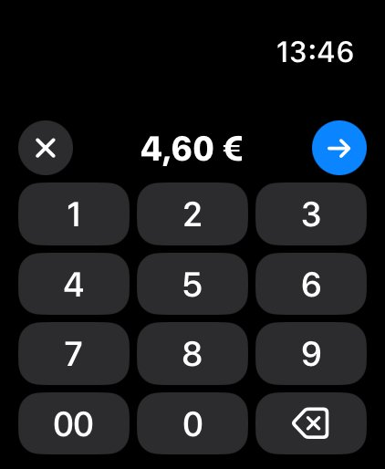
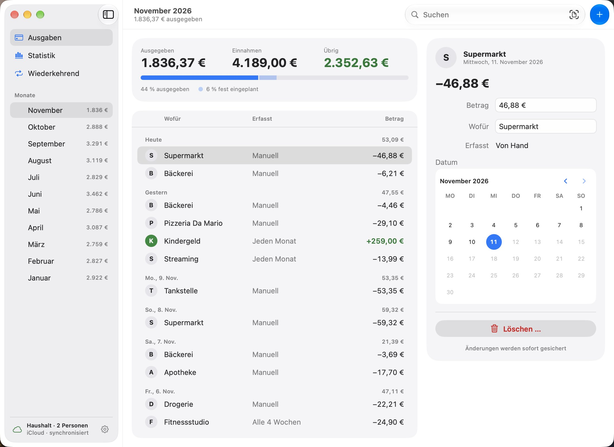

Ein Tag mit Tilla
Vom Bäcker am Morgen bis zum Sofa am Abend: wie ein Haushalt Tilla auf Apple Watch, iPhone, Mac und iPad nutzt – und alle immer dasselbe sehen.

Apple Watch
Brötchen, bar bezahlt
Betrag tippen, Bäckerei wählen – eingetragen, bevor das Wechselgeld in der Hand ist. Das iPhone bleibt in der Tasche.

iPhone · Apple Pay
Mit Apple Pay bezahlt
Später zahlt jemand anderes aus dem Haushalt beim Bäcker mit dem iPhone. Tilla schlägt die Ausgabe vor – ein Tipp auf „Hinzufügen“ genügt.

iPhone
Großeinkauf im Supermarkt
Kassenbon fotografieren: Summe, Geschäft und Datum stehen drin. Das Foto bleibt bei der Ausgabe – für alle im Haushalt.


Mac
Zwischendurch am Schreibtisch
⌥⌘N aus jeder App: Betrag, wofür, sichern – ohne das Fenster zu wechseln. Oben steht, wie viel vom Monat schon weg ist.
iPad
Gemeinsam auf dem Sofa
Wo ist das Geld diesen Monat hin? Die Statistik zeigt es auf einen Blick – mit allem, was heute auf Uhr, iPhone und Mac dazugekommen ist.

iPhone
Und ganz von allein
Miete, Kita und Strom legt ihr einmal an. Tilla trägt sie am Fälligkeitstag ein, ohne dass jemand daran denken muss.
Ein Haushalt, alle Geräte
Jeder Eintrag ist über iCloud gleich bei allen – ohne Konto und ohne Server.